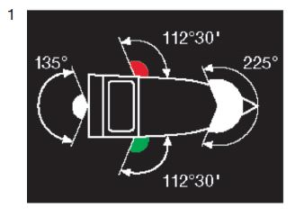

- a)
„Topplicht“:
ein weißes starkes Licht, das über einen Horizontbogen von 225°
und zwar von Voraus bis beiderseits 22°30’ hinter die Querlinie,
und das nur in diesem Bogen sichtbar ist; - b)
„Seitenlichter“:
an Steuerbord ein grünes helles Licht und an Backbord ein rotes
helles Licht, von denen jedes über einen Horizontbogen von
112°30’, das heißt von Voraus bis 22°30’ hinter die Querlinie auf
der Seite, auf der das Licht angebracht ist, und nur in diesem Bogen
sichtbar ist; - c)
„Hecklicht“:
ein weißes gewöhnliches Licht oder ein weißes helles Licht,
das über einen Horizontbogen von 135°, und zwar 67°30’ von
Achteraus nach jeder Seite und nur in diesem Bogen sichtbar ist; - d)
„von allen Seiten sichtbares Licht“:
ein Licht, das über einen Horizontbogen von 360° sichtbar ist.
|  |